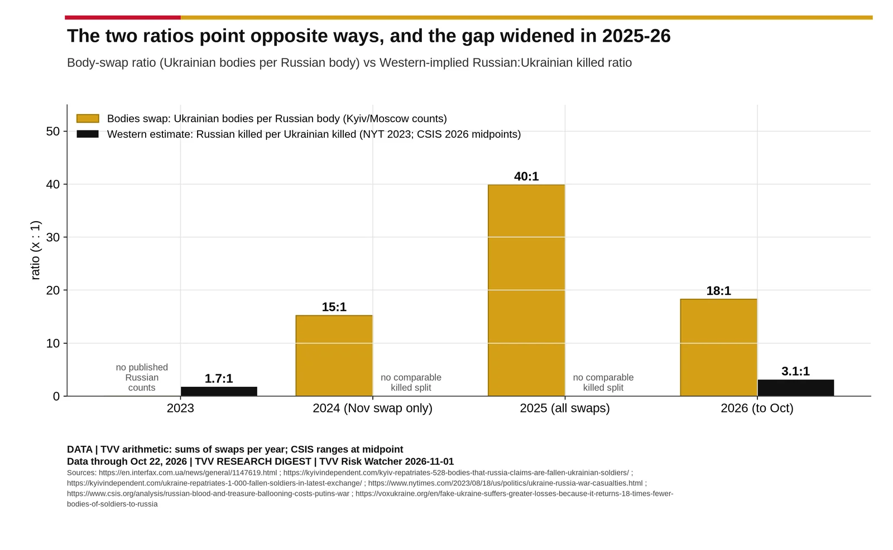
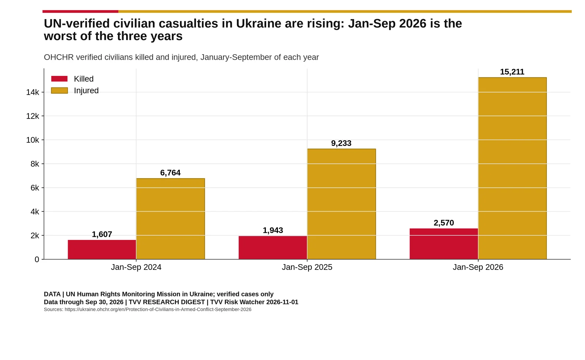

Divergence and Civilians
The swap ratio against the Western-implied killed ratio, and UN-verified civilian casualties.

Source: https://en.interfax.com.ua/news/general/1147619.html https://kyivindependent.com/kyiv-repatriates-528-bodies-that-russia-claims-are-fallen-ukrainian-soldiers/ https://kyivindependent.com/ukraine-repatriates-1-000-fallen-soldiers-in-latest-exchange/ https://www.nytimes.com/2023/08/18/us/politics/ukraine-russia-war-casualties.html https://www.csis.org/analysis/russian-blood-and-treasure-ballooning-costs-putins-war https://voxukraine.org/en/fake-ukraine-suffers-greater-losses-because-it-returns-18-times-fewer-bodies-of-soldiers-to-russia

Source: https://ukraine.ohchr.org/en/Protection-of-Civilians-in-Armed-Conflict-September-2026